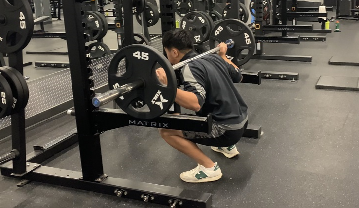

LES QUADRICEPS
Le quadriceps fémoral est le groupe de muscle qui se situe en avant de la cuisse du corps humain. Il est composé de quatre muscles; le droit fémoral, situé au centre de la cuisse, qui est directement lié à la rotule par un tendon; le vaste latéral, le plus volumineux, qui est situé complètement au côté extérieur de la cuisse; le vaste médial, qui se situe au niveau de la face interne de la cuisse; le vaste intermédiaire, qui se situe sous le droit fémoral, entre le vaste médial et le vaste latéral.
De nombreux exercices permettent de stimuler les quadriceps, dont diverses variations de ce qu’on appelle le squat, comme le barbell squat, le dumbbell squat, le ballet squat, le hack squat et le front squat. Le squat est un exercice qui stimule en grande partie les quadriceps, mais il stimule beaucoup le reste du bas du corps. D'ailleurs, il s'agit d'un bon exercice pour le corps au complet, car de nombreux groupes de muscles sont engendrés pour l'exécution du mouvement. Plusieurs autres exercices permettent de cibler les quadriceps, comme le dumbbell lunge, le leg press et le leg extension.
LE SQUAT
La principale variation du squat est effectuée avec une barre de poids portée sur le dos lors de l'exécution du mouvement, soit sur les trapèzes ou sur les deltoïdes. L’exercice consiste à s’accroupir en inclinant le dos vers l’avant jusqu'à ce que les fémurs arrivent à l'horizontale et par la suite effectuer une extension des jambes en redressant le buste pour se retrouver dans la position de départ.
En arrêtant la descente lorsque les fémurs arrivent à l'horizontale, le travail des quadriceps est bien ressenti, contrairement à si les cuisses étaient amenées plus bas que l'horizontale. Cette pratique met plus d’emphase sur les fessiers.
LE HACK SQUAT
Le «Hack Squat» ou la presse inclinée est un exercice effectué à l’aide d’une machine. Le mouvement consiste à placer son dos sur le dossier de la machine, caler ses épaules sous les coussinets et tendre ses jambes afin de soulever le poids, puis débloquer la sécurité et effectuer une flexion des jambes. Comme pour le squat à poids libre, il faut arrêter sa descente lorsque les cuisses sont à l'horizontale, afin de pouvoir bien stimuler ses quadriceps.
Finalement, après avoir effectué la descente, il faut revenir à la position de départ et procéder aux prochaines répétitions. Après avoir effectué la dernière répétition, il faut bloquer la sécurité, pour ensuite pouvoir lâcher le poids.

LE LEG PRESS
Le «Leg Press» ou la presse à cuisses inclinée est un exercice similaire au «Hack Squat», sauf qu’il ne s’agit pas d’une variation du squat. L’exercice se fait couché, le dos calé sur le dossier de la machine du «Leg Press». Les pieds doivent être positionnés sur la plateforme de la machine. Afin de stimuler les quadriceps prioritairement, les pieds doivent être resserrés et placés sur le bas de la plateforme.
L'exécution du mouvement consiste à débloquer la sécurité, puis fléchir les genoux au maximum et ensuite revenir à la position de départ.
Après avoir effectué la dernière répétition, il faut bloquer la sécurité afin de retenir le poids. Il faut toujours s'assurer de garder les fesses collées au dossier tout le long de l'exécution du mouvement et d’ajuster le dossier de la presse de manière optimale afin d'éviter de nuir au dos et la hanche. Cet exercice peut être utilisé par les personnes dans l'incapacité d’exécuter de squat.
LE LEG EXTENSION
Le «Leg Extension» ou l’extension des jambes à la machine est l’exercice considéré comme le meilleur mouvement d’isolation des quadriceps. Son exécution consiste à s'asseoir sur le siège de la machine, y agripper les mains, mettre les chevilles sous les coussinets tout en fléchissant les genoux et ensuite effectuer une extension des jambes jusqu'à l’horizontale, puis tranquillement replier les jambes et procéder au restant des répétitions. Afin d’intensifier le travail du droit fémoral lors de cet exercice, il est utile de plus incliner le dossier, ce qui fera en sorte que le droit fémoral sera étiré, étant donné que le bassin sera en rétroversion.